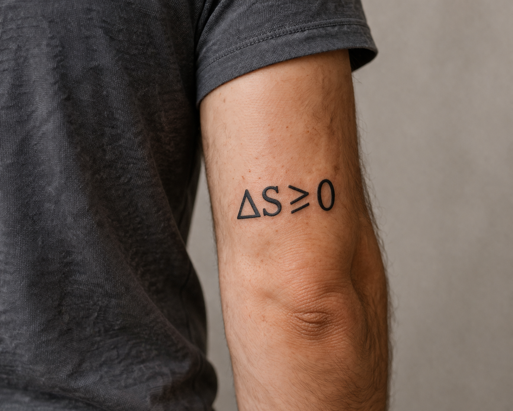
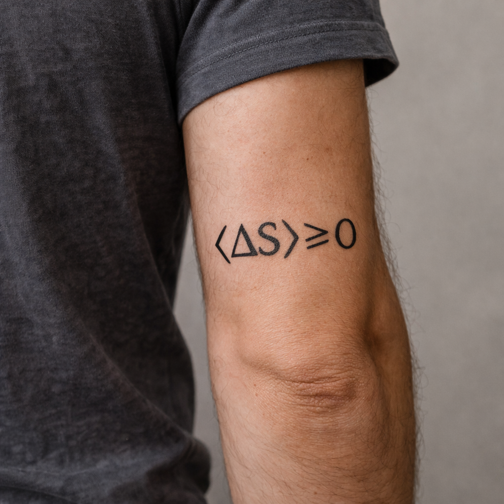

thermodynamics • fluctuations • nonequilibrium physics
The second law, statistically
March 25th, 2026

A few weeks ago I was at the APS March Meeting in Denver. It was interesting, though not exactly surprising, to see that a very large fraction of the exhibition floor and many of the talks revolved around quantum computing. That is the current gravitational center of a lot of physics-adjacent funding, optimism, and branding, whether one likes it or not.
The convention center had an area near the top with a view of Denver and the Rocky Mountains. It was one of those unexpectedly peaceful conference moments: bright air, some sun, a little distance from the buzz downstairs. I sat there for a bit doing nothing in particular, which is sometimes the most productive thing one can do at a conference.
And then I noticed a guy with a tattoo on the back of his arm, just above the elbow. It said
$$ \Delta S \geq 0. $$
Ten or fifteen years ago this would not have bothered me at all. In fact, if you had asked my younger self what formula from thermodynamics I would consider tattoo-worthy, I might well have chosen the same one. But now it bothered me just enough that I felt a childish urge to walk over with a Uni Posca marker and add angle brackets:
$$ \langle \Delta S \rangle \geq 0. $$
Not because the tattoo was “wrong” in any useful practical sense. For macroscopic systems, it is basically right. If you compress the air in a room, melt an ice cube, burn fuel in an engine, or drop cream into coffee, the entropy increase is so overwhelmingly likely that writing \(\Delta S\geq 0\) is an excellent approximation to reality. The issue is that it is still an approximation. The second law is not a divine prohibition. It is a statistical statement. This is what many people still don't know and when you tell them they think you're a crook, not Crooks, who developed a more complete version of Jarzynski's equality from which the generalization of the second law out of equilibrium was found for the first (actually, second) time.
1. The textbook version
The way most of us first meet the second law is through a clean law: entropy does not decrease. There are good pedagogical reasons for this. Thermodynamics is already abstract enough, and nobody wants to make first exposure even murkier by immediately introducing probability distributions over trajectories, rare events, coarse graining, and the subtle distinction between typical behavior and absolute impossibility.
Historically, the second law was not first written in the compact entropy form we use today. Carnot's original insight was phrased in terms of heat engines: there are strict limits to how much useful work can be extracted from heat, and reversible engines set the optimal benchmark. It was only later, with Clausius, that this idea was recast into the now familiar thermodynamic language of entropy.
In that classical formulation, the second law says that for an isolated system entropy cannot decrease:
$$ \Delta S \geq 0. $$
Clausius pushed this point even further in his famous summary that the entropy of the universe tends to a maximum. Presented this way, the law sounds like an absolute prohibition: nature appears simply to forbid certain processes from taking place. And for macroscopic systems this is an extraordinarily good approximation. One never sees heat spontaneously flow from a colder body to a hotter one, or a gas in a room gather itself into a corner.
But something important is hidden when the law is stated in that absolute form. What one learns later, if one learns it at all, is that the second law is not really a ban at the microscopic level. It is a law of overwhelming probability. In a macroscopic sample with an enormous number of degrees of freedom, entropy-decreasing trajectories are not impossible; they are simply so unlikely that for all practical purposes they are never observed.
This is one of the deepest lessons of statistical mechanics: what appears at human scales as an iron law emerges, at a more fundamental level, from counting, probability, and typicality. Irreversibility does not come from the microscopic equations literally excluding the reverse process. It comes from the fact that the reverse process occupies an absurdly tiny region of the space of possibilities.
In that sense, the second law is closer in spirit to the statement that one will never witness all the air in a room spontaneously collect into a corner than to the statement that such an event is mathematically impossible. For large systems the distinction hardly matters in practice, but conceptually it matters a great deal.
2. Small systems can fluctuate “the wrong way”
Once one starts looking at nanoscale systems, molecular machines, colloidal particles, biomolecules, or small driven quantum systems, the textbook slogan becomes too blunt. In these regimes the fluctuations are not negligible at all.
A single realization of an experiment can show what, from the macroscopic viewpoint, looks like a local violation of the second law. Heat can flow the “wrong” way for a moment. A driven system can, in a single run, appear to do better than the naive thermodynamic bound. Entropy production can come out negative on one trajectory.
The point is not that thermodynamics has failed. The point is that thermodynamics was never supposed to be read as an absolute statement about every single microscopic history. It is a statement about distributions, ensemble averages, and overwhelmingly likely behavior.
In fact, once one phrases things carefully, these apparent violations become not embarrassing exceptions but precise quantitative probes of nonequilibrium physics. They are exactly the kind of events whose probabilities are constrained by the fluctuation theorems.
3. Jarzynski, fluctuation theorems, and why the average behaves
A modern way to say all this uses the fluctuation relations developed in the 1990s, among which the Jarzynski equality is probably the most famous. Consider a system initially prepared in thermal equilibrium at inverse temperature \(\beta\), and then driven out of equilibrium by changing some external control parameter in finite time. If \(W\) is the work done during a single realization of that protocol, Jarzynski's equality says
$$ \left\langle e^{-\beta W}\right\rangle = e^{-\beta \Delta F}, $$
where \(\Delta F\) is the equilibrium free-energy difference between the final and initial control settings. This is a remarkable identity because it holds even for processes driven arbitrarily far from equilibrium.
It is also one of those formulas whose conceptual meaning is bigger than its compactness suggests. It says that even when the work fluctuates wildly from run to run, the fluctuations are not arbitrary. The entire work distribution is tied to an equilibrium quantity.
And from this equality, by Jensen's inequality,
$$ \langle W \rangle \geq \Delta F. $$
That is one precise modern version of the second law. On average, the work done exceeds the reversible free-energy cost, even though individual realizations may fall below it. What looks like a “violation” in a single run is compensated statistically across the ensemble.
Closely related results, such as Crooks' fluctuation theorem, make the point even more sharply by comparing the probability of a forward trajectory with that of its time-reversed cousin. Schematically, entropy-producing trajectories are exponentially favored over entropy-reducing ones, but the latter are not assigned probability zero. They are rare, not illegal.
This is exactly why I wanted to add brackets to the tattoo. Not because the unbracketed formula is useless, but because the brackets encode the conceptual leap from classical thermodynamics to statistical mechanics: the law survives, but it survives as a law about averages, typicality, and exponentially biased probabilities.
For macroscopic systems the distinction is almost invisible, because fluctuations scale roughly like \(N^{1/2}\) while extensive entropy changes scale like \(N\). So as \(N\) becomes large, the relative size of the fluctuations collapses. Actually, this was known to Boltzmann already, who never believed that Statistical Mechancis was a microscopic theory.
4. Why I think we should teach this earlier
None of this is especially controversial anymore. It is standard nonequilibrium statistical mechanics. And yet it is still not usually how we introduce the second law. Students are often first told the absolute-sounding version, and only much later are they informed that the real object underneath is statistical.
I understand why. One does not want to confuse beginners, and there is a natural wish to preserve the elegance of phenomenological thermodynamics before exposing the machinery underneath. But I increasingly think that this choice comes at a cost.
It encourages the idea that the second law is a prohibition instead of an emergence statement. It makes the later appearance of fluctuation theorems seem like a correction or loophole rather than the mature formulation of what was really going on all along. And it deprives students of one of the most beautiful lessons in physics: that irreversibility is not fundamental in the way it first appears to be.
Personally, I think a textbook should say this clearly near the beginning: for macroscopic systems, entropy increase is so overwhelmingly probable that we may treat it as deterministic; for microscopic systems or single realizations, entropy-decreasing fluctuations can occur; the second law is recovered as a statistical statement about averages and typical behavior.
That is not a weakening of the law. If anything, it is the stronger and more interesting form of it. It explains not only why the law works, but also when it can appear to fail and why those apparent failures are themselves constrained.
5. Black holes and the price of taking the second law seriously
There is another reason I find this distinction worth dwelling on. If one takes the second law very seriously, and extends it beyond ordinary laboratory matter, one is led to some extraordinary places. A famous example is black-hole thermodynamics.
Bekenstein's starting point was essentially to ask what happens to the second law when entropy-bearing matter falls into a black hole. If the black hole simply swallows the entropy and nothing compensates for it, then the ordinary second law seems to fail for the exterior world. That tension led him to propose that a black hole itself should carry an entropy, proportional to horizon area.
$$ S_{\mathrm{BH}} \propto A. $$
This was not originally just a decorative analogy. It was driven by a real attempt to save a generalized second law. The proposal was radical, and in hindsight incredibly fruitful. Hawking's later discovery that black holes radiate thermally fixed the proportionality constant and turned the analogy into one of the deepest facts we have about gravity and quantum theory.
So yes, if you assume the second law in a robust enough form, you can get astonishing mileage out of it. Black-hole entropy is one of the best examples of that. It is one reason I do not want to sound flippant about the tattoo: the rough macroscopic statement \(\Delta S\geq 0\) has earned its prestige.
Still, I cannot help wondering about the alternative route. If from the start one insists that the second law is statistical, what is the most natural way to formulate its extension to black holes? The standard generalized second law remains the right language for macroscopic semiclassical gravity, and black holes are special objects for many other reasons anyway. But I have often wondered how differently the intuition might have developed if the probabilistic character of entropy production had been emphasized more explicitly from the beginning.
That, however, is a story for another day. Long story short, if you want to get the tattoo right, use the one below.
